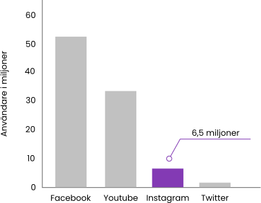
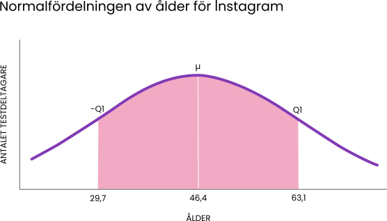
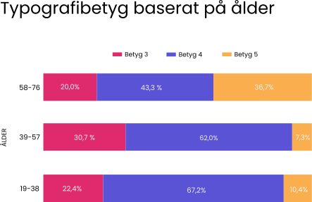

Här är en visualisation på hur Instagram ligger till i jämförelse med liknande sociala medieplattformar i Bangladesh.
Fastän vi är topp 3 så är användargapet stort mellan Instagram och de populära plattformarna. Vi vill öka antalet användare genom att vara bättre i ett område som ingen annan är.
Antalet Instagramanvändare i Bangladesh år 2024

Källa: DataReportal (tidigt 2024)
Lägsta betyg för Instagram
Källa: Mendeley Data (2024)
Vi har skapat ett spindeldiagram baserat på en studie med
2 271 personer som ger ett betyg inom olika UX kategorier för olika plattformar. På detta sätt kan vi ta reda på vilket område som Instagram är svagast i samt hur de ligger till i förhållande till de andra sociala medierplattformarna.
Diagrammet är en inzoomad version för att lättare tyda betygsskillnader. Vi ser att instagrams svagaste område är typografi men också att de andra populära plattformarna verkar ha liknande problem. Vi har valt att ta bort webbplatsen “Webbsite” från datasetet eftersom vi valde att endast fokusera på socialamedier plattformar.
Hur kommer det sig att typografi ligger så lågt bland alla plattformar?
En hypotes är att typsnittet och teckenstorleken inte är tillräckligt läsvänligt för sina användare. En annan hypotes är att Instagram och andra plattformar inte har beskrivande text för sina knappar vilket gör det svårt för ovana användare att navigera och använda sig av olika funktioner.
Ett sätt att testa våra hypoteser är genom att göra en antagelse: ju äldre en användare är desto större är chansen för synnedsättning samt mindre erfarenhet kring applikationer och sociala medier.
Normalfördelningen av ålder för Instagram

Källa: Mendeley Data (2024)
Det fanns endast 452 svar om Instagram i den hämtade studien. Som ni ser på normalfördelningskurvan är den inte klockformad som de oftast brukar vara. Detta beror på den höga standardavvikelsen som ligger på 16,7 år. Att en kurva har ett så högt standardavvikelsetal är på grund av att det inte är tillräckligt många personer i studien för att göra säkra antaganden om hela populationen baserat på datan. Ni ser även att vi har ett väldigt högt medelvärde vilket betyder att vi har många fler i åldern 30-63 fastän att studien hade personer från 19 till 76 år.
Typografibetyg baserat på ålder

Källa: Mendeley Data (2024)
För att få ett bra svar om vad olika åldrar ger Instagram för betyg i typografi så har vi använt oss av procent, vilket vi har gjort då åldersgrupperna är olika många. Vi delar först upp svaren i tre åldersgrupper. Grupp 19-38 åriga har 19 åldrar medans grupperna med 39-57 åriga respektive 58-76 åriga har 18 åldrar. Genom att dela upp svaren i åldersgrupper kan vi snabbare se hur populära vissa betyg är i olika åldergrupper. Vi har valt att sätta ut “Lågt”, “Medel” och “Högt” istället för betygen 3,4,5 som det var i datasetet, då siffrorna inte gav en indikation huruvida om betyget var högt eller inte. Resultatet vi ser är att den äldsta åldersgruppen har procentuellt gett fler höga betyg till typografin än de andra grupperna med över 20 procentenheter. Den gruppen som procentuellt ger fler låga betyg är den mellersta gruppen mellan 39-57 år.
För att testa vår Hypotes - att det finns en korrelation mellan ålder och betyg, så har vi gjort chi-två-tester. Testet visade att vi kan förkasta vår nollhypotes (att det inte finns en korrelation), och att det finns en korrelation mellan åldrarna och vad för betyg de sätter.
Diskussion
Potentiella anledningar till varför typografi verkar svårt för så många webbsidor: kan vara på grund av att många knappar har ingen förklarande text alls kan vara på grund av skriftliga språket bengali kan vara på grund av att typsnittet bryter mot designprinciper (icke dyslexi vänligt) Fortsatt studie: Hur kan vi förbättra vår typografi? Med tillåtelse att ägna mer tid och resurser åt detta ämne kan vi forska vidare på vad problemet kan vara samt komma på åtgärder